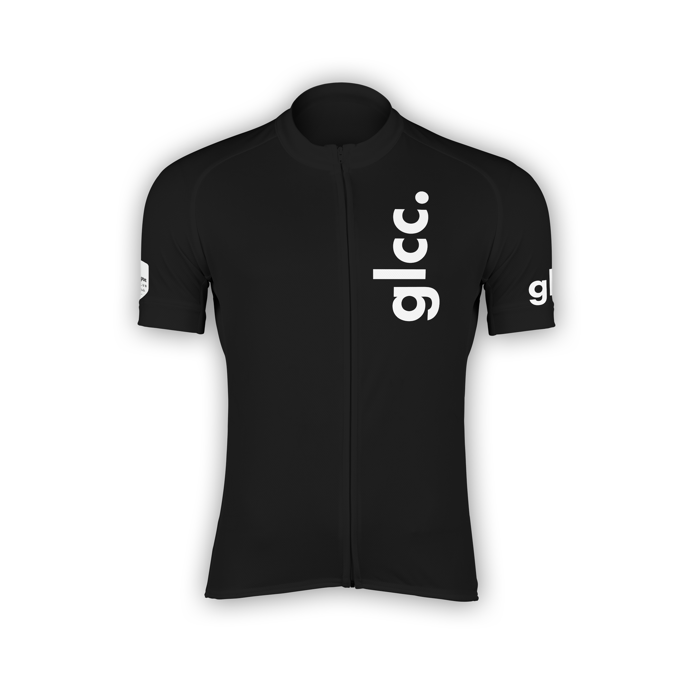
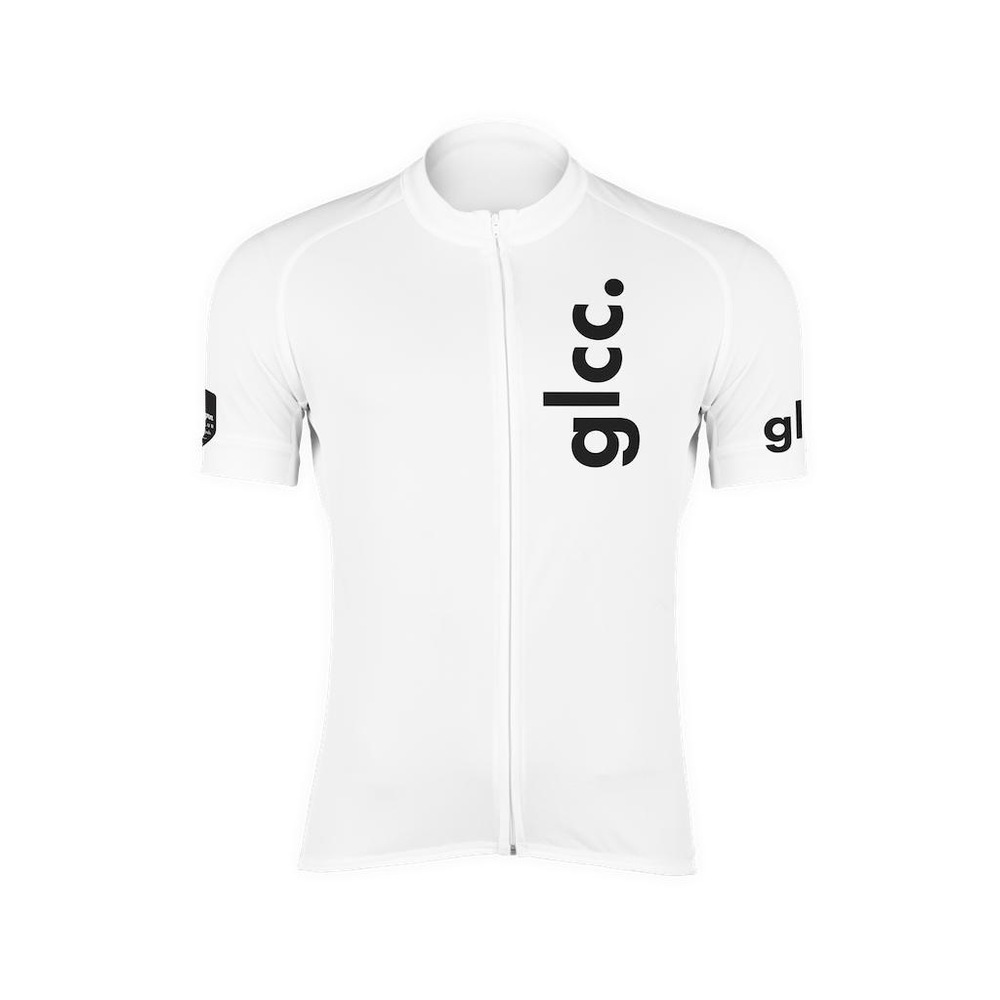

---
# You don't need to edit this file, it's empty on purpose.
# Edit theme's home layout instead if you wanna make some changes
# See: https://jekyllrb.com/docs/themes/#overriding-theme-defaults
layout: shop
description: '2018 Summer Jersey'
product-title: "2018 Summer Jersey"
product-description: "This is a short-sleeve cycling jersey designed for riding in hot and humid climates. The fabric of the jersey is technical: perforated for breathability, high-wicking to take sweat away from your skin, and fast-drying."
---
{% include logo.html %}
{% include logo.html %}
Grey Lynn Cycling Club
{{ page.product-title }}
$60.00 NZD
{{ page.product-description }}


Frequently Asked Questions
📣 Why should I buy it?
All proceeds of this project goes to World Bicycle Relief. Help us help them mobilize people through bicycles, while looking fresh on your bike.